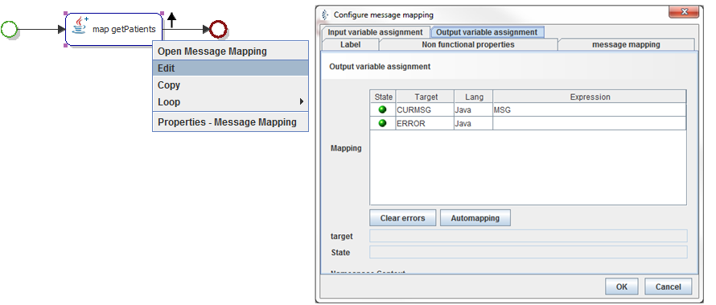
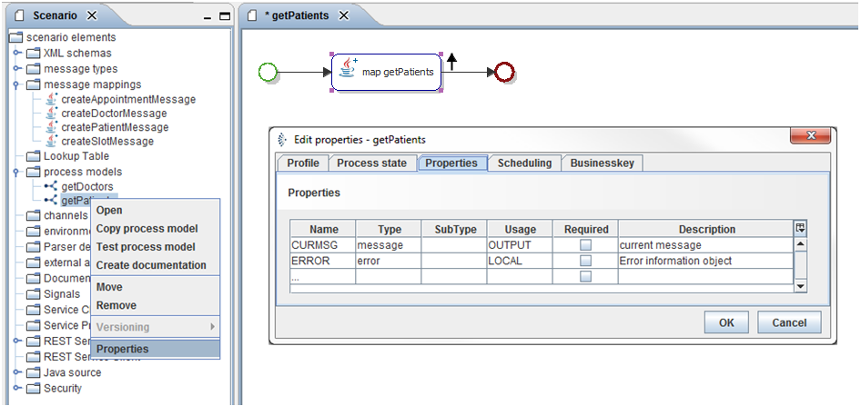
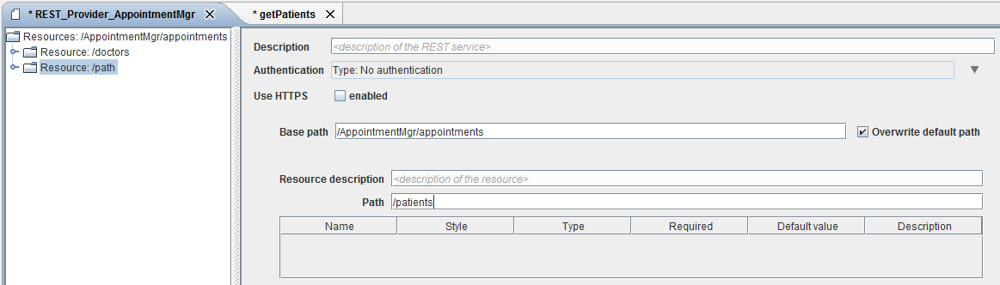
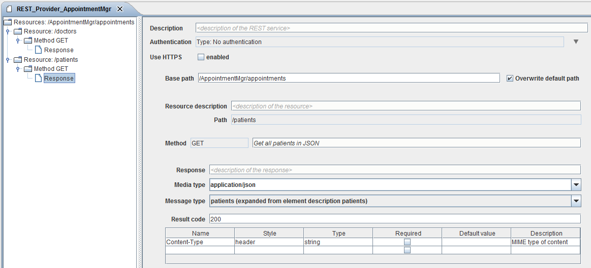
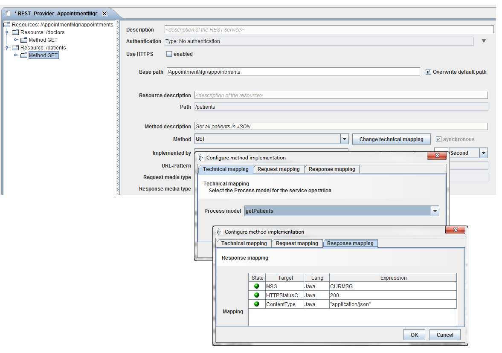
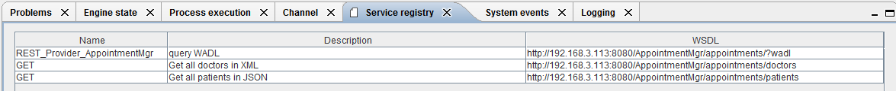
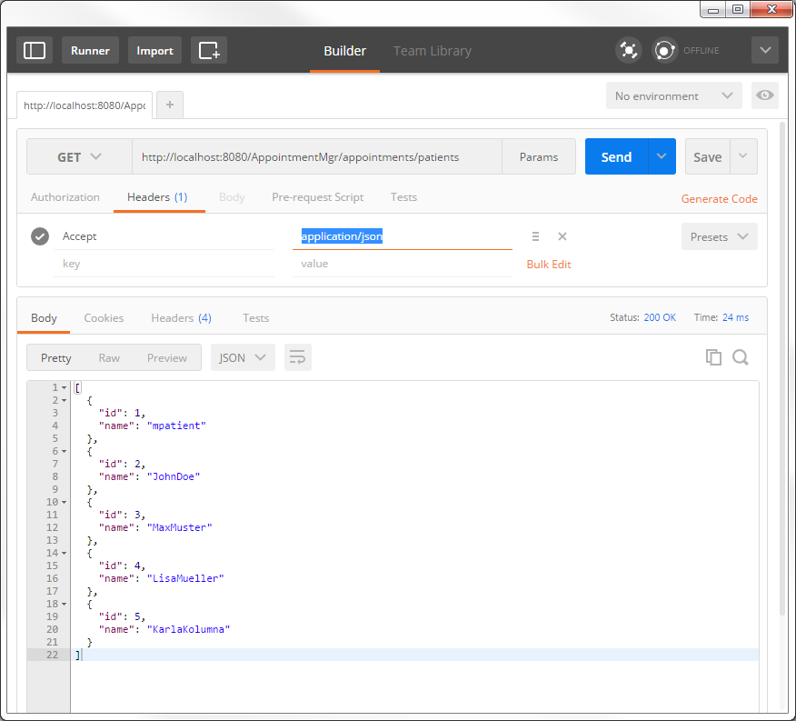
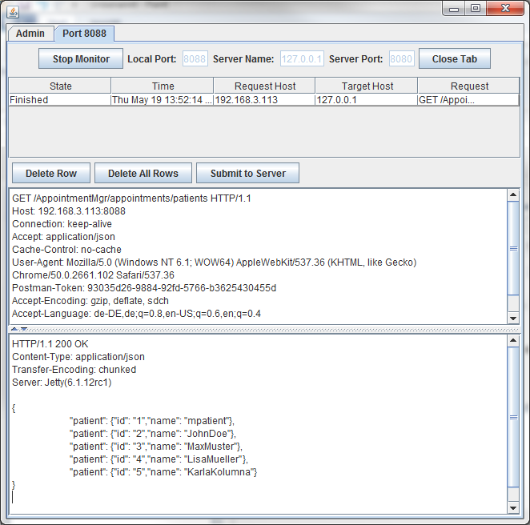

Listing all patients in JSON (Method GET)

Topic content
In this chapter we will create a Orchestra REST Provider implementation to a list of all patients. According to chapter 3.3.3 Listing all patients in JSON (Method GET) we request the appointmentService by using the URL, but this time the appointmentService is implemented by Orchestra and for the Request we use the POSTMAN addon. Do following steps for the implementation.
http://localhost:8080/AppointmentMgr/appointments/patients
1.Copy your shell scenario from chapter 5.4.1 Preparation.
2.Create a process model.
3.Add the mapping getPatients to your process model.
4.Link all elements in your modell.
5.Configure the Output variable assignment of the Mapping.

Figure 71 – Listing all patients in JSON – Process Modell
6.Open the Properties of your process model. Change the usage of the CURMSG at register Properties to OUTPUT.

Figure 72 – Listing all patients in JSON – Process Modell Properties
7.Open the REST Service Provider REST_Provider_Appointment.
8.Add a resource to the root resource /AppointmentMgr/appointments.
9.Set to resource path /patients.

Figure 73 – Listing all patients in JSON – Resource /patients
10.Insert a Method GET to the resource /patients.
11.Remove the Request for the Method.
12.Set the Media type of the Response to application/json, select the Message type patients and set the Result code 200.

Figure 74 – Listing all patients in JSON – Resource /patients Response Configuration
13.Change technical mapping of the Method GET.
14.Select at register Technical mapping the process model you created.
15.Set the Variables at register Response mapping.
16.Use application/json as ContentType, MSG get’s the CURMSG of the process model and HTTPStatusCode is 200 (200 = OK).

Figure 75 – Listing all patients in JSON – Resource /patients technical mapping of Method GET
17.Start your Test engine and select register Service registry at the test engine panel. Here you get the Endpoints for your REST Provider.

Figure 76 – Listing all patients in JSON
18.Copy the link for the patients resource to your Postman application set the Method to GET, create an Accept = “application/json” header and send the request. If every thing is fine you’ll get following response (See screenshot).
Hint: If you don’t have installed Postman yet, have a look at chapter 3.2.3 Postman addon Google Chrome.

Figure 77 – Postman Trace: Listing all patients in JSON

Figure 78 – TCPMON Trace: Listing all patients in JSON
If you compare your TCPMon trace with the trace from chapter 3.3.2 Listing all patients in XML (Method GET) you can see that Orchestra produces an identical trace up to application-specific header informations.
Request |
Response |
GET /AppointmentMgr/appointments/patients HTTP/1.1 Host: 192.168.3.113:8088 Connection: keep-alive Accept: application/json Cache-Control: no-cache User-Agent: Mozilla/5.0 (Windows NT 6.1; WOW64) AppleWebKit/537.36 (KHTML, like Gecko) Chrome/50.0.2661.102 Safari/537.36 Postman-Token: 93035d26-9884-92fd-5766-b3625430455d Accept-Encoding: gzip, deflate, sdch Accept-Language: de-DE,de;q=0.8,en-US;q=0.6,en;q=0.4
|
HTTP/1.1 200 OK Content-Type: application/json Transfer-Encoding: chunked Server: Jetty(6.1.12rc1)
{ "patient": {"id": "1","name": "mpatient"}, "patient": {"id": "2","name": "JohnDoe"}, "patient": {"id": "3","name": "MaxMuster"}, "patient": {"id": "4","name": "LisaMueller" }, "patient": {"id": "5","name": "KarlaKolumna"} }
|